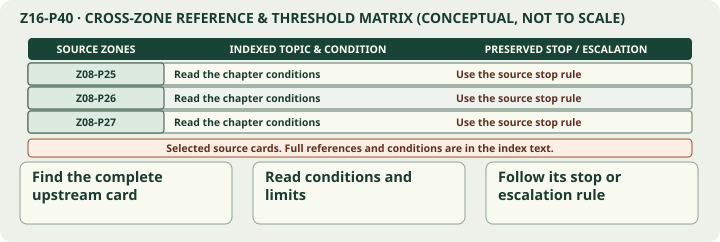

Z16-P40 · Field reference atlas · New manuscript
Soil Texture, Clay Plasticity and Contamination Exclusion Index
Integrate soil drainage, clay ribbon screening, lead, tailings contamination, and wild-clay cookware limits across Z02, Z08, and Z14.
When it applies · Campsite drainage selection, home garden soil safety, and non-food geological clay study.
Equipment · Full offline reader (Z02, Z08, Z14), primary zone cards, and local emergency and agency references.

Actions
- Use sandy-versus-clay texture recognition to avoid camping on flat ponding clay basins or unstable saturated riverbanks (Z08-P25, Z08-P29, Z02-P05).[A04, R17, E01]
- Exclude urban, pre-1978 painted-structure, roadway, railway, and mine-tailings soils from food growing or bare-hand clay work unless laboratory testing verifies safety (Z08-P27, Z14-P04).[A04, R12, P01]
- Reject unverified wild clay for cooking pots or drinking-water storage because trapped moisture cracks over fire and unknown clays leach heavy metals (Z08-P28, Z08-P53).[A04, R12, R13, R17]
Failure recognition · Mistaking clean-looking river clay or old yard soil for food-safe material risks thermal scald bursts and lead exposure.[R12, R13, R17]
Verify · Drainage check, laboratory lead testing for gardens, and non-food boundaries on wild clay stay intact.[R12, R17, P01]
Stop or change course · Stop digging soil on public parks, SNAs or using wild clay, soil near drinking water and food.[R09, R12, R17]
Evidence and editorial notes
- A04 · Minnesota DNR · Minnesota Geology and Glacial History Overview (Current web edition)
- Section: Geological and natural-material cross-zone lookup · Conditions: Linking Z08 materials with Z02 shelter, Z03 fire, Z09 tools, and Z11 compass limits
Support: Material cross-references preserve dust/silica hazards, wet-rock spalling stops, iron-rock compass deflection, and public-land collecting prohibitions.
Limitations: Material summaries never imply structural load ratings or chemical cookware safety. · Conflicting evidence: None noted.
Editorial note: Anchors Z16 materials index. · Specialist reviewer: Geologist and materials reviewer
Primary source · checked 2026-11-25 - E01 · Minnesota DNR · Safety in State Forests (current web edition)
- Section: Before your trip and while visiting · Conditions: State-forest travel and backcountry planning
Support: Know the route, check conditions, carry navigation and safety equipment and share trip details.
Limitations: Conditions and trail maintenance vary seasonally across forest units. · Conflicting evidence: None; aligns with NPS-H.
Editorial note: Foundation for trip planning and pre-departure risk checks. · Specialist reviewer: Land management and search and rescue
Primary source · checked 2026-11-24 - P01 · University of Minnesota Extension · Planting the Vegetable Garden (current web edition)
- Section: Site Selection, Sunlight, Frost Dates, and Short-Season Planning · Conditions: Home vegetable gardening in Upper Midwest / Minnesota (USDA Zones 3–5)
Support: Select a sunny well-drained garden site receiving 6–8+ hours of direct sunlight, match crop days-to-maturity to local last-spring and first-autumn frost dates, and separate cool-season crops from frost-sensitive warm-season crops.
Limitations: Microclimates, low frost pockets, and soil clay/sand composition shift local planting windows by weeks. · Conflicting evidence: None; anchors regional Minnesota growing-season realism.
Editorial note: Grounds Z14 regional food production and frost-window planning. · Specialist reviewer: Horticulture and university Extension specialist
Primary source · checked 2026-11-24 - R09 · Minnesota DNR · Minnesota State Park Rules and Resource Collecting Restrictions (Current web edition)
- Section: State park natural-feature protection · Conditions: Minnesota State Parks and Recreation Areas
Support: Removing rocks, minerals, soil, or live vegetation from Minnesota State Parks is prohibited to protect natural resources.
Limitations: Verify jurisdiction boundaries before picking up specimens even along shorelines or trails. · Conflicting evidence: None noted.
Editorial note: Bounds state-park material collection. · Specialist reviewer: Minnesota DNR resource manager
Primary source · checked 2026-11-25 - R12 · U.S. EPA · Protect Your Family from Lead in Soil and Dust (2025)
- Section: Soil contamination and urban/industrial lead hazards · Conditions: Soils near historic structures, roadways, mines, or industrial sites
Support: Soils and clays near older painted structures, smelters, tailings, or roadways may harbor lead or industrial contaminants.
Limitations: Visual texture or color cannot detect lead, arsenic, or chemical contaminants; do not use unverified soil/clay for cookware or food contact. · Conflicting evidence: None noted.
Editorial note: Separates clay plasticity checks from chemical safety. · Specialist reviewer: Environmental health and soil scientist
Primary source · checked 2026-11-25 - R13 · National Park Service · Rocks and Minerals Geological Overview (Current web edition)
- Section: Thermal shock, moisture spalling, and rock weathering · Conditions: Porous, laminated, or water-saturated stones exposed to heat or freeze-thaw
Support: Water-saturated, porous, or layered rocks can fracture violently when rapidly heated or subjected to freeze-thaw stress.
Limitations: Dry surface appearance does not prove internal pores are moisture-free; keep unverified rocks out of fires and hot vessels. · Conflicting evidence: None noted.
Editorial note: Reinforces Z03/Z08 wet-rock spalling stop. · Specialist reviewer: Geologist and fire safety reviewer
Primary source · checked 2026-11-25 - R17 · Minnesota Geological Survey (UMN) · Minnesota Geological Survey Maps and Regional Geology (Current web edition)
- Section: Clay-rich glacial lake sediments and plasticity limits · Conditions: Glacial lake plains and alluvial clay deposits
Support: Fine clay particles confer wet plasticity and shrinkage upon drying, unlike gritty silt or sand.
Limitations: Field ribbon/roll checks only estimate texture; they do not verify thermal shock resistance, firing integrity, or freedom from soil toxins. · Conflicting evidence: None noted.
Editorial note: Bounds Z08 clay identification vs cookware claims. · Specialist reviewer: Soil scientist and ceramic/materials specialist
Primary source · checked 2026-11-25
Source lineage · New manuscript (Z16 P20 material index) · Classification · New manuscript.